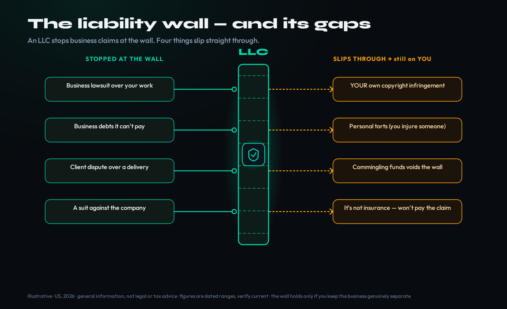
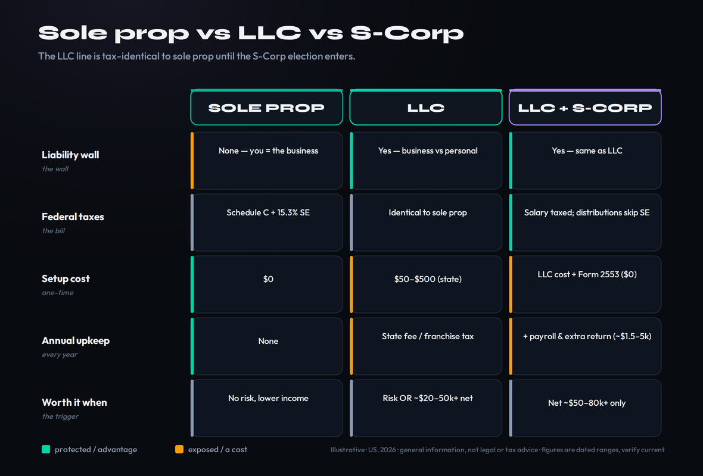
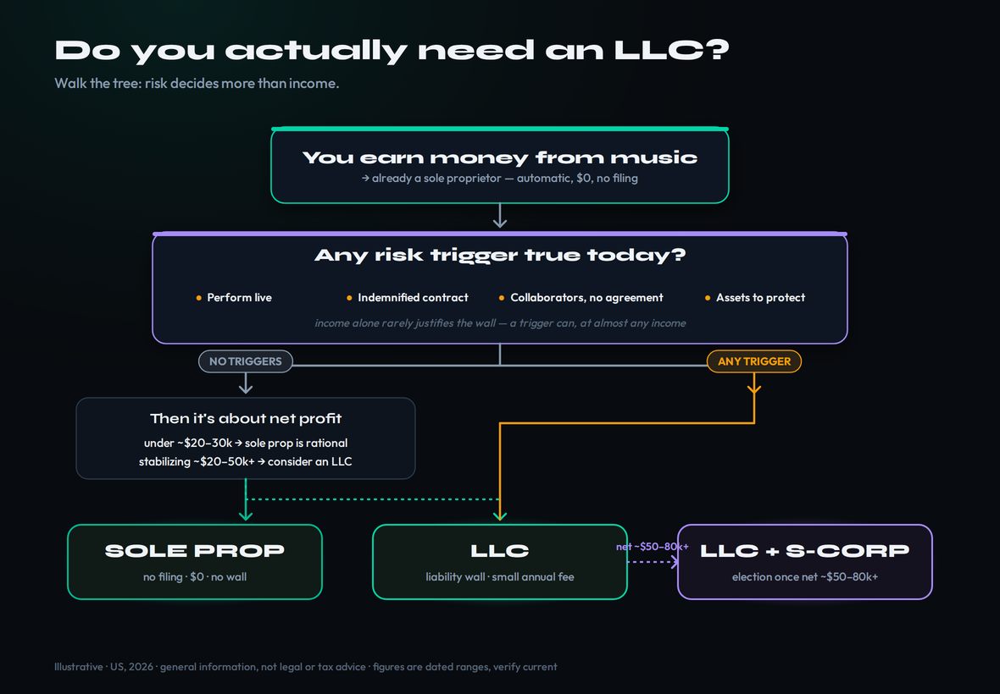

General information, not legal or tax advice. This is a US-focused explainer to help you think clearly about entity choice — it is not a substitute for a CPA or an attorney who knows your state and your numbers. Every figure here is a dated range, verified June 2026; tax thresholds and state fees change, so confirm the specifics before you file. Rules outside the US differ entirely.
The Honest Short Answer
Most working producers do not need an LLC yet — and the ones who tell you that every musician needs one the day they sell their first beat are usually selling LLC formation services. The honest answer is not a yes or a no. It is a decision tree, and it turns on one question that has almost nothing to do with how much money you make: how much risk are you actually exposed to?
Here is the whole thing in four sentences, before the detail. The moment you earn money from music, you are already a business — a sole proprietor by default, with no paperwork required. An LLC buys you exactly one important thing: a legal wall between your music business and your personal savings, car and home. Whether that wall is worth its annual cost depends on your risk — performing live, signing contracts that make you promise the sample is clear, splitting a song with collaborators — far more than on a dollar threshold. And the tax savings everyone whispers about? They do not come from the LLC at all; they come from a separate election that only pays off once your profit is genuinely substantial.
So the real question is never "should I have an LLC." It is "what is my exposure today, and has it crossed the line where a $50–$800-a-year wall is cheaper than the risk it removes?" For a bedroom producer selling beats online for $30 a lease, the answer is usually not yet. For a producer signing a sync deal that makes them personally guarantee the track is original, the answer can be yes at almost any income. The rest of this guide gives you the actual logic so you can place yourself on the tree instead of guessing.
One framing makes the rest of this easier. Think of the LLC question as insurance against a specific event — a business claim reaching your personal assets — priced at a known annual premium, which is whatever your state charges to keep the entity alive. You do not buy insurance because your income crossed a line; you buy it when the thing it protects against becomes likely or costly enough to matter. That is exactly how to read the sections ahead: work out what you would actually be protecting, estimate how exposed it is, then weigh that against the real recurring cost. If you earn from music at all you are already on the tree — the only question is which branch you are standing on.
You're Already a Business
This is the part nobody tells new producers, and it changes how the whole question feels: the day you take money for a beat, a mix, a feature or a sync placement with the intent to profit, the IRS already considers you a business. Specifically, a sole proprietorship — the default structure for one person, automatic, requiring zero filings and zero fees. You did not have to choose it. You are in it the moment the first dollar lands.
Being a sole proprietor has real upsides. It costs nothing, there is no separate tax return, and your business income and expenses simply flow onto Schedule C of your personal Form 1040. You can already deduct ordinary, necessary expenses — your DAW subscription, plugins, that interface, sample packs, a portion of your rent if you have a dedicated studio space — straight against your music income. (Our music producer tax guide walks through exactly which write-offs hold up.) None of that requires an LLC. The deductions are a feature of running a business, not of incorporating one.
One sole-proprietor reality worth naming early, because it catches producers off guard more than liability ever does: nobody is withholding your taxes for you. As an employee, tax is taken out of every paycheck; as a self-employed producer you owe it yourself, and once you expect to owe roughly $1,000 or more for the year, the IRS wants it in four estimated quarterly payments rather than a single April lump sum. Miss those and you can face an underpayment penalty on top of the bill itself. This is true the day you become a sole proprietor and has nothing to do with whether you ever form an LLC — it is simply part of being your own business. Setting aside a rough quarter to a third of each payment as it comes in, from your very first paid beat, is what keeps tax season from turning into a crisis.
The catch is the word "sole." As a sole proprietor there is no legal line between you and the business — they are the same legal person. Your business income is your income; your business's liabilities are your liabilities. On the income side, that means you owe ordinary income tax plus self-employment tax of 15.3% (12.4% Social Security on the first $184,500 of 2026 net earnings, 2.9% Medicare with no ceiling) on your net profit — the full freight a W-2 employee splits with an employer. On the liability side, it means that if the business is sued or runs up a debt it cannot pay, the person on the hook is you, and the assets a court can reach are your assets. That single exposure — not taxes — is the entire reason an LLC exists, and it is what the next section is about.
What an LLC Actually Does
Strip away the marketing and an LLC — a Limited Liability Company — does one job that matters: it creates a liability wall. Legally, it makes the business a separate "person" from you. When the business signs a contract, it is the LLC signing, not you. When the business owes money or gets sued over its work, the claim runs against the LLC's assets, and — used in good faith — it stops at that wall instead of reaching through to your personal bank account, your car, or your home equity. That separation is the product. Everything else people attribute to LLCs is either a myth (the taxes) or available without one (a business name, a business bank account, an EIN).
Where does that wall earn its keep for a producer? Concretely: a venue claims your live set caused an injury or damaged equipment; a client sues over a mix you delivered late; a label's lawyers come after you because a sample you swore was cleared turns out not to be; a collaborator disputes who owns what. In a sole proprietorship, every one of those reaches your personal assets. Behind a properly run LLC, they reach the business and stop. If you are routinely signing agreements that shift risk onto you — and music contracts are full of that language — understanding the wall matters as much as understanding the deal, which is why it pays to learn how to read a music contract before you sign one.
Now the honesty an LLC marketer leaves out: the wall has gaps, and they are big ones. An LLC does not shield you from your own wrongdoing. If you personally infringe someone's copyright — you cleared nothing and used the sample anyway — you can be sued personally regardless of the LLC, because you committed the act. It does not cover personal torts (you injure someone, that is on you, not the company). And the wall is only as solid as your discipline: if you pay for groceries out of the business account and route session fees through your personal Venmo, a court can decide the separation was fiction and "pierce the veil," collapsing the wall you paid to build. An LLC is also not insurance — it limits which assets a claim can reach; it does not pay the claim. For many producers, modest liability or equipment insurance does as much real-world good as the entity, and the two work best together. The diagram below maps exactly what the wall stops and what slips through.

The Tax Myth Every Producer Repeats
The single most common reason producers rush to form an LLC is to "save on taxes," and for the standard one-owner LLC, that reason is simply wrong. A single-member LLC is, in the IRS's own language, a disregarded entity: for federal income tax it is taxed identically to a sole proprietorship. Same Schedule C, same income tax, same 15.3% self-employment tax on the same net profit. Forming the LLC changed your legal exposure; it changed your tax bill by exactly zero dollars. If anything it added cost — a state filing fee now, and in some states an annual one forever.
The 20% Qualified Business Income (QBI) deduction people sometimes point to does not help the argument either, because it is a pass-through deduction available to sole proprietors and LLC owners alike — it was made permanent by the One Big Beautiful Bill Act in July 2025 and stays at 20%, but a sole proprietor claims it just the same. It is not an LLC perk. So where do the real self-employment-tax savings live? In a separate move called the S-Corp election — and it is a tax election, not an entity. An LLC (or a corporation) files IRS Form 2553 to be taxed as an S-Corp. After that, you pay yourself a "reasonable salary," which carries the 15.3% payroll tax, and take the rest as distributions, which do not. The SE tax you skip on the distribution portion is the saving.
The reason it is not free money is the fine print. The IRS requires the salary to be genuinely reasonable for your role — pay yourself $5,000 and call $75,000 a distribution and you will lose an audit. Running payroll costs money, you file an extra business return, and the formalities are real, commonly $1,500–$5,000 a year in compliance once you add it all up. As a rough, defensible illustration: a producer netting about $80,000 might pay roughly $11,000–$12,000 in SE tax as a plain sole proprietor; electing S-Corp with, say, a $50,000 salary and $30,000 in distributions skips SE tax on that $30,000 — on the order of $4,500 — but only nets ahead after the payroll and accounting costs. That is why the consensus break-even sits somewhere around $50,000–$80,000 of net profit, not at your first paid beat. The matrix below lines up sole prop, LLC and LLC-with-S-Corp side by side so you can see that the LLC line and the sole-prop line are tax-identical until the election enters. (None of this is a substitute for running your specific numbers with a CPA — these are dated 2026 ranges to reason with, not a filing.)

When It's Actually Worth It
Because the LLC buys protection, not tax savings, the decision runs on two axes at once: your risk and your income. Risk can justify an LLC even on modest income; income alone rarely justifies one without risk. Walk the tree below from the top.
Risk triggers — any one of these can make the wall worth it even if you are not earning much yet. You perform live, where injury and equipment claims are real. You sign licensing or sync contracts with indemnification — the clause where you personally promise the work is original and clear, and agree to cover the other side if it is not; a single sample dispute can dwarf a year's income, which is why producers who sample need to understand how to clear a sample and what clearance actually costs before they sign anything that indemnifies a label. You work with collaborators and need an operating agreement that defines splits and ownership before a hit forces the conversation. Or you simply have personal assets worth protecting — savings, a home, equity — that a business claim could otherwise reach.
Income bands — treat these as ranges with reasoning, not bright lines, because the real driver is still risk. Under roughly $20,000–$30,000 of net music profit with no risk triggers, a sole proprietorship is usually the rational choice: the protection has little to guard and the cost and admin are pure drag. As income stabilizes into the $20,000–$50,000+ range, an LLC starts to make sense — you now have something to protect and the annual fee is small against it. Only past roughly $50,000–$80,000 of net profit does the S-Corp election on top of the LLC typically pencil out, once the SE-tax saving clears the payroll and accounting cost. A producer pricing beats deliberately and tracking profit will usually feel these thresholds arrive in that order: protect first, optimize taxes much later.
Put the two axes together and the map is simple. No income, no risk: you are a sole proprietor and that is fine. Real risk, any income: an LLC can be worth it now. Substantial, stable profit: an LLC, and eventually the S-Corp election on top. The tree below renders exactly that — earn from music, check your risk branches, place yourself in an income band, and read off sole prop, LLC, or LLC + S-Corp.

What You Can Do Without an LLC
A surprising amount of what producers think requires an LLC requires nothing of the kind. Knowing this is what lets you stay a sole proprietor in good conscience until a real trigger appears, instead of paying for an entity to unlock things you already have.
You can deduct business expenses — every ordinary, necessary cost of making music for profit — straight on Schedule C as a sole proprietor. The LLC adds nothing to your deductions; the deductions come from operating a business. You can get an EIN (Employer Identification Number) free, directly from the IRS, and use it on contracts and tax forms instead of your Social Security number — sole proprietors are allowed one, and it is a smart privacy move whether or not you ever incorporate. You can run under a business or stage name and open a dedicated business bank account by filing a DBA ("doing business as," sometimes called a fictitious name) with your county or state for a small fee — that gives you the professional name and the clean, separate account without forming an entity. And a separate account is worth doing on day one regardless, because clean books make tax time painless and make any future LLC's liability wall defensible.
You can also build the entire money-making side of a music business as a sole proprietor: invoice clients (our producer invoice guide covers doing it cleanly), set rates with a rate card, sign work-for-hire and licensing deals — the substance of music contracts applies to sole proprietors exactly as it does to LLCs — and develop passive income from leases and sync. The LLC does not unlock any of that. It only changes who is personally on the hook if one of those deals goes wrong. Keep that distinction clear and you will form an entity for the right reason, at the right time, instead of out of vague anxiety.
There is also a cheaper protection most producers walk straight past on the way to an LLC: insurance. If the exposure you are actually worried about is a venue injury, damaged equipment, or a client claiming your work caused them a loss, a modest general-liability or equipment policy can address that risk head-on — and unlike an LLC, insurance pays the claim rather than only walling off which assets it can reach. For a lot of working producers the honest first move is a few hundred dollars of the right coverage, not a state filing. The two are complements, not substitutes: the entity limits which assets are exposed, the policy funds the loss when one actually lands. Pricing a relevant policy before you form an entity is often the most cost-effective protection decision on the whole list.
How to Set One Up (When the Time Comes)
If you have walked the tree and an LLC is genuinely warranted, the mechanics are not complicated — five steps, mostly a weekend of admin, no lawyer strictly required for a simple single-member setup (though a one-time consult is cheap insurance). The order matters.
- Pick a name and form in your home state. Choose a business name that is available in your state's registry, then file where you live and work. This is the step producers get wrong: forming in Delaware or Wyoming because a YouTube video said so usually means you then have to register as a "foreign" LLC in your home state anyway, paying two sets of fees for one business. Unless you have a specific, advised reason, your home state is the answer.
- File the Articles of Organization. This is the one document that actually creates the LLC, filed with your Secretary of State. Expect a one-time formation fee, commonly in the $50–$500 range depending on the state, plus a registered-agent requirement in some states (you can often be your own).
- Get an EIN. Free from the IRS, in minutes, online. The LLC uses it for its bank account, contracts and taxes.
- Open a business bank account. Fund it, and route every dollar of business income and expense through it. This is not optional housekeeping — it is what keeps the liability wall standing, because commingling is the fastest way to lose it (next section).
- Write an operating agreement. Even as a single member, draft one. It states how the business is owned and run and reinforces that it is a separate entity. The moment you bring in a collaborator it becomes essential — define the splits and ownership in writing before there is anything to fight over, the same discipline our contract guide urges for every deal.
Two items on that list quietly trip producers up. The first is the registered agent — a person or service with a physical address in your formation state who can receive legal mail during business hours. In most states you can be your own agent for free if you are based there; a paid service (roughly $100–$300 a year) mainly buys privacy and the assurance that nothing important is missed while you are touring or deep in a session. The second is what “doing business” actually means: if you live in one state but routinely work in another — regular out-of-state sessions, a second home base while touring — you may need to register in both, the same double-fee trap that makes out-of-state formation a mistake. For the overwhelming majority of solo producers, forming and operating in your home state keeps all of this simple.
You also have three ways to actually file, at three price points. Doing it yourself directly through your Secretary of State’s website costs only the state fee and is entirely reasonable for a simple single-member LLC. A formation service adds a flat fee to handle the paperwork and set up a registered agent. An attorney costs the most and earns it mainly when there are collaborators, investors, or genuinely unusual circumstances. Whichever route you take, do it before the risk arrives, not after — an LLC only protects against claims that occur while it is properly in place, so forming one the week a dispute lands does nothing for that dispute. The entity is a wall you build in advance, not a shield you raise once you already see the punch coming.
Budget for the ongoing side too, because it is where the real cost hides. Many states charge an annual report fee or franchise tax to keep the LLC alive. The headline example is California, which levies an $800 minimum annual franchise tax on every LLC doing business there — even one earning $0 — and note that the old first-year waiver for LLCs expired at the end of 2023, so as of 2026 a California LLC owes that $800 from year one. Other states charge little or nothing. Know your state's number before you file, because that recurring fee is the true price of the wall, and it is what makes "do I need this yet" a real question rather than a free default.
The Mistakes That Quietly Void Your Protection
An LLC is not a magic word you say once. It is a wall you have to keep standing, and a handful of ordinary mistakes knock it down — often without the owner realizing the protection is already gone until a claim arrives.
Commingling funds is the big one. The instant you pay personal bills from the business account or run business income through your personal account, you blur the line the LLC exists to draw. In a lawsuit, the other side argues the LLC was never really separate — that it was just you with extra paperwork — and asks the court to "pierce the corporate veil." If they win, the wall is treated as if it never existed and your personal assets are exposed anyway. Every dollar that crosses the line weakens the case for separation. A dedicated account and clean books are not bureaucracy; they are the protection itself.
Forming in the wrong state is the costly one. Setting up in Delaware or Wyoming as a solo artist who lives and works elsewhere usually means registering as a foreign entity at home too — double filings, double fees, double annual maintenance — for no benefit a solo creator can use. Ignoring annual filings and fees is the silent one: miss the report or the franchise tax and the state can administratively dissolve your LLC, and a dissolved LLC offers no protection at all, so a claim that arrives during the lapse lands on you personally. And the broadest mistake is treating the LLC as insurance or as a shield for your own acts. It is neither. It will not cover your personal copyright infringement, it will not cover a personal tort, and it does not pay claims — it only limits which assets a business claim can reach. And protecting the asset that matters most to a producer — your copyrights — is separate rights work an LLC never touches, so it pays to also learn how to copyright your music. The producers who get the most from an LLC pair it with the right habits and, often, a modest insurance policy. Get those pieces right and the wall holds; get them wrong and you have paid an annual fee for paperwork that protects nothing.
A note on the numbers: this is general education, not legal or tax advice — we are not your accountant or attorney, and your entity choice is your call. Every figure here is a dated 2026 range; self-employment-tax thresholds, state franchise fees and the QBI rules all change, so confirm the specifics for your state and take your real numbers to a CPA before you form an entity or file an election.
Place Yourself on the Tree
The whole point of a decision tree is that it answers your situation, not the average one. Run these three exercises on your real music business and you will leave with a defensible decision instead of a vague worry.
- Write down every dollar you earned from music in the last 12 months — beat leases, mixes, features, sync, anything — and the intent behind it. If you took it to profit, you are a sole proprietor already; note that you are, and that no filing made it so.
- List the business expenses you paid against that income (DAW, plugins, interface, sample packs, studio rent share). These are deductible on Schedule C with no LLC required — confirm you are actually claiming them.
- Check whether any business money currently runs through a personal account mixed with personal spending. If it does, you have just found the first habit to fix, LLC or not.
- Tick every trigger that is true today: you perform live; you have signed (or will sign) a contract that makes you promise the work is original or cleared; you split songs with collaborators without a written agreement; you have personal assets (savings, a car you own, home equity) a claim could reach.
- For each tick, write the worst realistic outcome in dollars. A sample-clearance indemnification can run into five figures fast; a disputed split can cost a song.
- If you ticked even one trigger with a serious dollar figure behind it, the liability wall is doing real work for you — even at a modest income. Zero ticks and low income means a sole proprietorship is the rational default for now.
- Take your real net music profit (income minus expenses). Place it in a band: under ~$20–30k, ~$20–50k+, or ~$50–80k+.
- Look up your home state's LLC formation fee and annual fee or franchise tax (in California that floor is $800 a year from year one). Subtract that recurring cost from the value the wall protects — if the protected assets and contract risk clearly outweigh it, the LLC is worth it; if not, wait.
- Only if you are above ~$50–80k net, sketch the S-Corp election: a reasonable salary plus distributions, the SE tax you would skip on the distributions, minus roughly $1,500–$5,000 in payroll and accounting. If the saving clears that cost with margin, take the result to a CPA to confirm before filing Form 2553. Below the band, leave it alone.
Frequently Asked Questions
No. The moment you earn from music you are a sole proprietor by default, with no filing required, and you can already invoice clients, deduct business expenses on Schedule C, and sign licensing deals as a sole proprietor. An LLC does not unlock any of that — it only adds a legal wall between the business and your personal assets. You form one when your risk or income warrants the protection, not to start getting paid.
Not by itself. A single-member LLC is a “disregarded entity” taxed identically to a sole proprietorship — same Schedule C, same income tax, same 15.3% self-employment tax on the same net profit. The real self-employment-tax savings come from a separate S-Corp election (Form 2553), where you pay yourself a reasonable salary and take the rest as distributions that skip the 15.3%. That typically only pays off above roughly $50,000–$80,000 of net profit, after payroll and accounting costs.
Business lawsuits and business debts. Used in good faith, the wall stops a claim against the business — a venue injury, a client dispute, a sample-clearance suit against the company — from reaching your personal savings, car or home. It does not protect you from your own acts: if you personally infringe a copyright or commit a personal tort, you can be sued personally regardless of the LLC. It is also not insurance — it limits which assets a claim can reach; it does not pay the claim.
Formation is commonly a one-time $50–$500 depending on your state. The ongoing cost is the part that matters: many states charge an annual report fee or franchise tax. California is the headline example at an $800 minimum annual franchise tax on every LLC — even one earning $0, and from year one as of 2026, since the old first-year LLC waiver expired at the end of 2023. Some states charge little or nothing. Always check your home state's recurring number before you file; it is the true price of the wall.
Almost certainly not, if you are a solo producer who lives and works somewhere else. Forming out of state usually means registering as a “foreign” LLC in your home state anyway, so you pay two sets of fees and maintain two filings for one business. The Delaware/Wyoming advantages are aimed at companies raising investment or with specific legal needs, not solo creators. Unless an advisor gives you a concrete reason, form in your home state.
Yes. File a DBA (“doing business as,” sometimes called a fictitious name) with your county or state for a small fee and you can operate under a business or stage name and open a dedicated business bank account — no entity required. A separate account is worth doing on day one regardless, because clean books make tax time easy and make any future LLC's liability wall defensible. You can also get a free EIN from the IRS as a sole proprietor to keep your SSN off contracts.
Generally only once your net music profit is genuinely substantial — the common consensus is somewhere around $50,000–$80,000 and up — because the self-employment-tax savings on the distribution portion have to outweigh real costs: running payroll, filing an extra return, and paying yourself a salary the IRS considers reasonable, often $1,500–$5,000 a year all in. Below that band the complexity usually costs more than it saves. Run your specific numbers with a CPA before filing Form 2553.
No. This is general, US-focused information to help you reason about entity choice, and every figure is a dated 2026 range that can change. Your state's fees, your exact tax situation, and the reasonable-salary and clearance questions all turn on specifics a guide can't see. Treat this as the map, then take your real numbers to a CPA or an attorney before you form an entity or make a tax election.